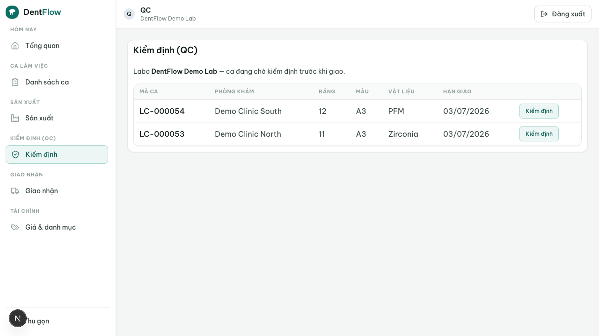

Cổng QC
Lỗi rời labo là chi phí đắt nhất — cổng QC biến "kiểm trước khi giao" từ thói quen tùy tiện thành chốt chặn cứng.
Cổng QC là cổng kiểm định bắt buộc mà mọi case phải vượt qua trước khi được giao về phòng khám. Một người vai trò QC chấm theo một checklist cố định: đạt (pass) thì case mới đi tiếp đường giao, trượt (fail) thì bị đẩy ngược về công đoạn sản xuất tương ứng kèm lý do. Đây là hiện thực của trạng thái qc trong vòng đời case — và là quality moat của DentIQ Lab.

Checklist 6 hạng mục bắt buộc
Checklist nhắm thẳng các nguyên nhân làm-lại hàng đầu ở VN — sai shade (nguyên nhân số 1) và cắn cao / khớp cắn sai (số 2) được đặt lên đầu:
- Đúng shade — đối chiếu với mã VITA + ảnh tab/stump/răng kế đã gửi kèm đơn, không chỉ "A2" trần.
- Khớp cắn / không cắn cao — kiểm khớp cắn.
- Độ khít (margin/fit).
- Đúng tooth — đúng vị trí răng theo phiếu.
- Đúng material — đúng vật liệu/line đã đặt.
- Thẩm mỹ — hình thể, bề mặt, glaze.
Pass chỉ hợp lệ khi mọi hạng mục đạt. Còn ≥1 hạng mục không đạt thì không cho pass. Với work order nhiều unit, QC chấm theo từng unit; còn ≥1 unit chưa đạt thì cả case chưa pass.
Ảnh bằng chứng & ghi phôi/lô
Trước khi mở cổng, QC phải bổ sung hai thứ — đây là moat thương mại cho tranh chấp "lỗi của ai" về sau:
- Ảnh bằng chứng bắt buộc — pass phải đính ≥1 ảnh thành phẩm; fail phải đính ≥1 ảnh nêu lỗi. Ảnh gắn vào bản ghi pass/fail để truy nguồn.
- Ghi material provenance (phôi/lô thực dùng) — trước khi pass, xác nhận mã phôi/lot khớp material đã đặt; bản ghi đi theo case suốt vòng đời, vá khoảng trống niềm tin phôi ở VN. Case nhiều unit ghi theo từng unit khi phôi khác nhau.
Lưu ý phạm vi: mã phôi/lot là chuỗi tự do của nhà sản xuất, không có catalog để đối chiếu tự động. Pass chỉ yêu cầu ghi mã phôi/lot không rỗng cho từng unit. Khi phôi thực dùng sai material đã đặt, QC bắt bằng cách đánh hạng mục material KHÔNG ĐẠT → không thể pass → buộc fail về công đoạn.
Pass / Fail đi đâu
| Kết quả | Điều kiện | Case chuyển tới |
|---|---|---|
| Pass | Đủ 6 hạng mục đạt + có ảnh + đã ghi provenance | ready_to_ship (vào đường giao) |
| Fail | ≥1 hạng mục không đạt; bắt buộc ghi lý do + chọn công đoạn quay lại + ảnh nêu lỗi | in_production đúng công đoạn lỗi để làm lại |
Cổng QC là cổng không bỏ qua được: không case nào vào delivered nếu chưa từng đạt một lần QC pass; lối duy nhất từ qc tới đường giao là qua một lần pass. Chỉ vai trò QC được ghi kết quả và mở cổng. Mỗi lần fail tạo một bản ghi feed thống kê redo (hạng mục lỗi, công đoạn, bên chịu trách nhiệm) để lộ điểm yếu và cải tiến theo thời gian.

qc đang chờ chấm. Điều phối/chủ labo theo dõi tỉ lệ trượt theo technician/công đoạn từ đây.Nếu nút Pass không sáng: kiểm tra đủ 6 hạng mục đã đạt chưa, đã đính ảnh thành phẩm và đã ghi mã phôi/lô cho từng unit chưa (BR-08, BR-09). Khi Fail, phải chọn công đoạn quay lại + ghi lý do + đính ảnh nêu lỗi, nếu không hệ thống chặn không cho chuyển trạng thái. Đây là chốt chặn cứng, không phải lỗi hệ thống.